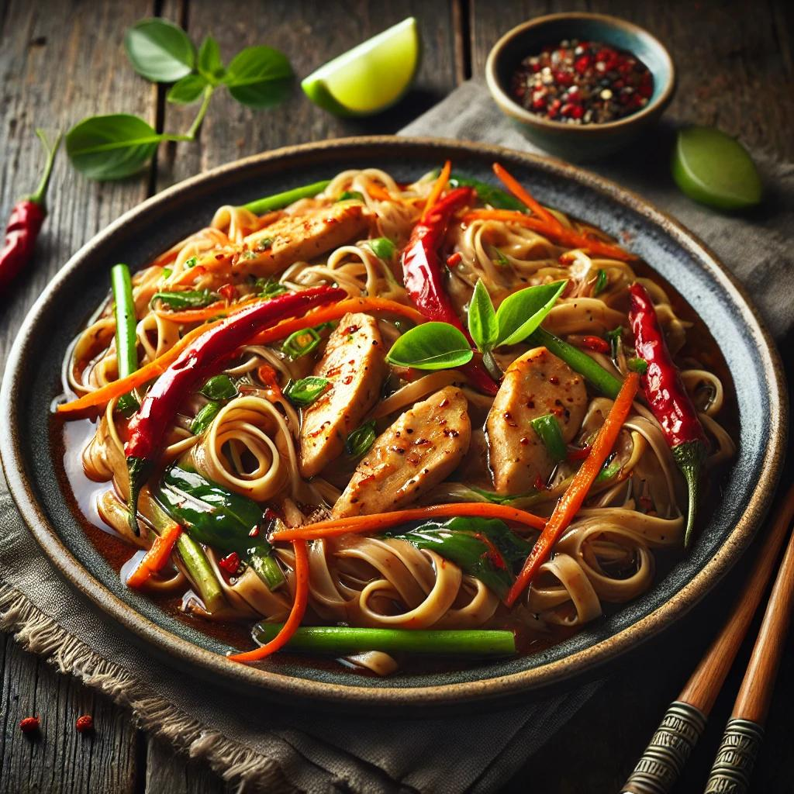

Drunken noodles

Delicious and easy Drunken Noodles recipe!
Ingredients
For the noodles:
- 200 grams of rice noodles
- 2 tbsp vegetable oil
- 2 cloves garlic
- 1 chicken breast
- 1 small onion
- 1 red bell pepper
- 1 small carrot
For the sauce:
- 3 tbsp soy sauce
- 1 tbsp oyster sauce
- 1 tbsp brown sugar
- 1 tsp rice vinegar
How to make
- Prepare the noodles according to package instructions, then drain and set aside.
- In a small bowl, combine all sauce ingredients and set aside.
- Heat oil in a wok or large pan over medium-high heat. Add garlic and chili, stir for 30 seconds, then add chicken/shrimp/tofu. Cook until golden brown.
- Toss in onion, bell pepper, and carrot. Stir-fry for 2 minutes until slightly tender.
- Add cooked noodles to the pan, pour in the sauce, and toss everything together for 1-2 minutes.
- Serve hot with lime wedges on the side.